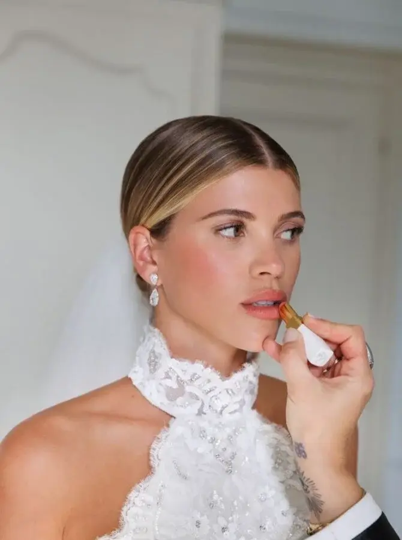
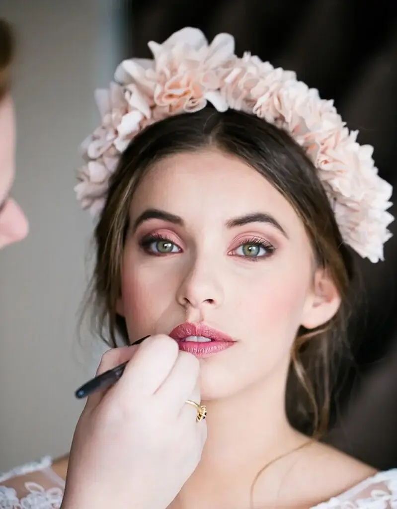
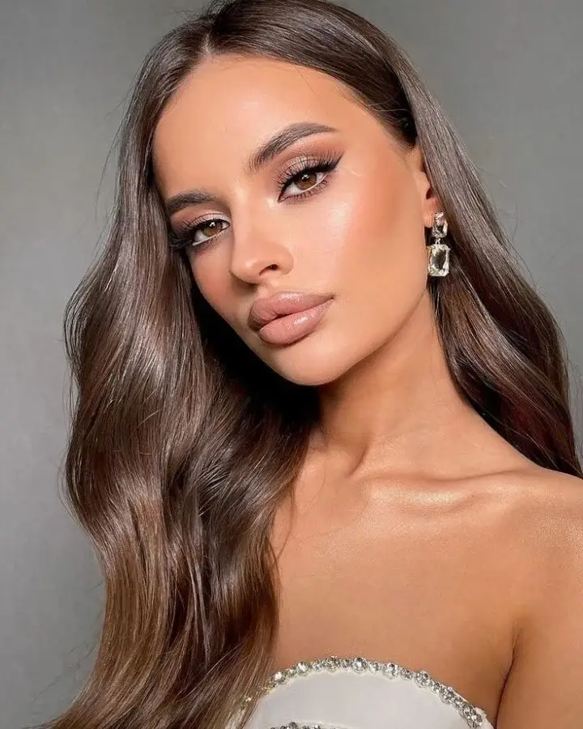
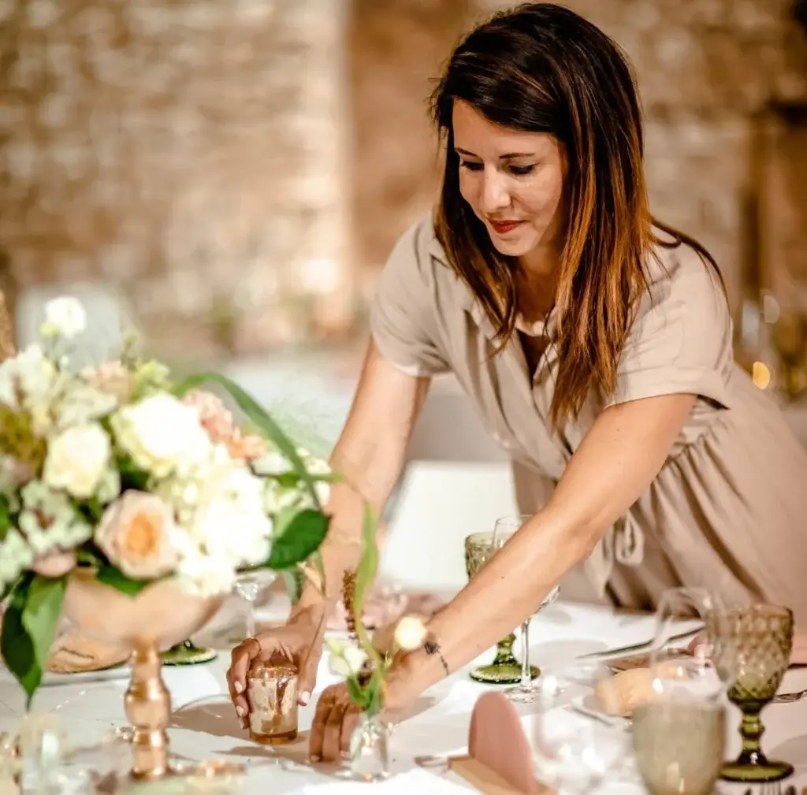
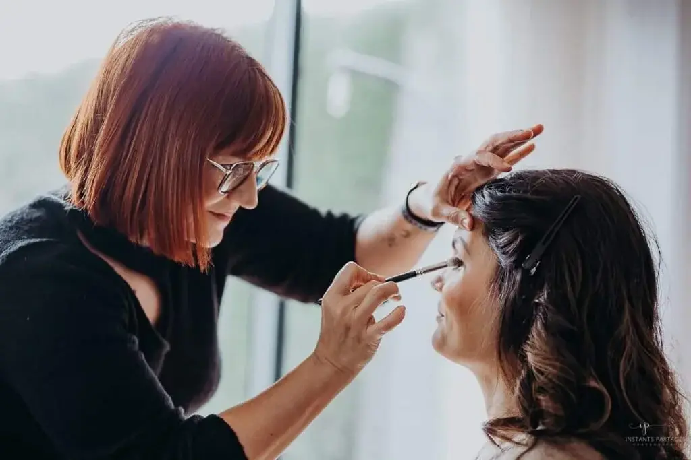
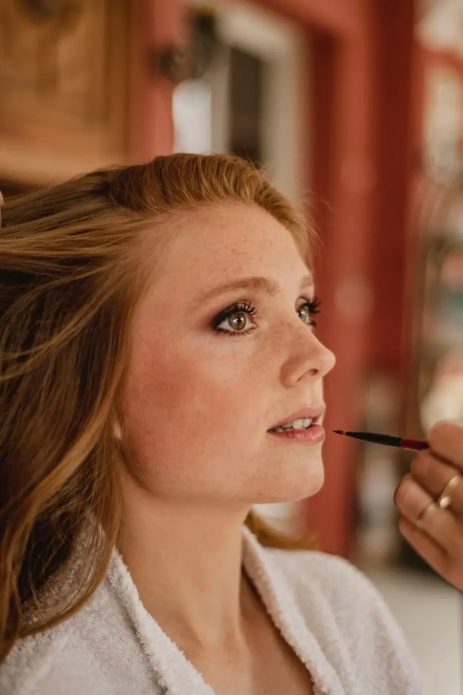
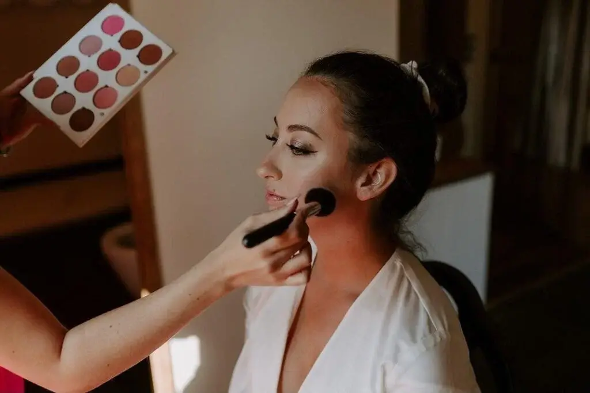
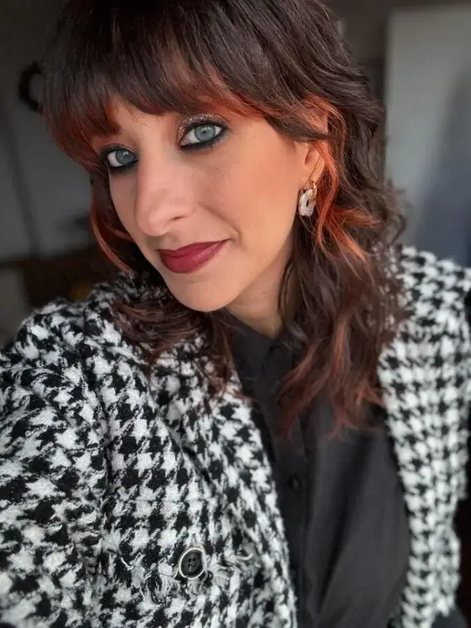
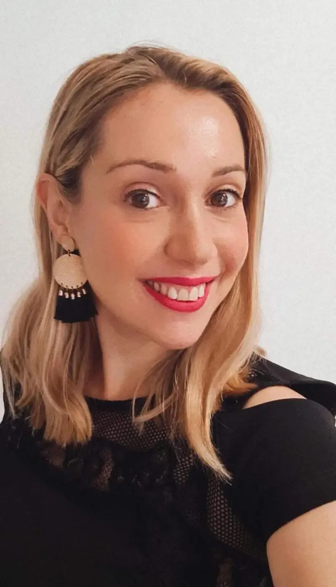

Where can you find a wedding make-up artist in Bordeaux? The wedding day is a time when every detail counts, when every glance is full of emotion and promise. Among the careful preparations, the choice of make-up is particularly important. It is a chance for the bride to shine brightly while keeping her natural beauty. Wedding make-up isn't just about applying cosmetics; it is a delicate art that aims to enhance the features and reflect the bride's inner radiance. In this article, we explore current wedding trends, practical advice and wise choices for wedding make-up that perfectly captures the spirit of this special day, and introduce a few Bordeaux make-up artists who specialise in big occasions, for a radiant, unforgettable look.
A variety of beauty looks
At a wedding, make-up plays an essential role in enhancing the bride's natural beauty while harmonising with the theme and style of the event. Here are the main types of make-up often chosen for weddings:

Natural or nude make-up
Natural make-up is a popular choice for weddings because it highlights the bride's natural beauty while remaining subtle and fresh. It is characterised by neutral tones and light textures that give a luminous complexion and an effortless look. This style suits brides looking for a soft, timeless look, ideal for outdoor weddings or daytime ceremonies.

Classic, elegant make-up
Classic wedding make-up focuses on a flawless complexion with an impeccable base, soft shades on the eyes to accentuate the gaze, and delicately rosy or nude lips. This style is appreciated for its sophistication and its adaptability to various wedding themes, whether traditional, modern or vintage.

Romantic make-up
Romantic make-up stands out for its soft, pastel tones, often with touches of pink or peach on the eyes and lips. It creates a soft, feminine look, perfect for weddings with a romantic, refined atmosphere. This style emphasises softness and delicacy, capturing the spirit of love and celebration.

Bohemian or rustic make-up
For bohemian or rustic weddings, make-up can incorporate natural elements such as earthy tones, lightly textured finishes and accents of warm colour. This style is often associated with glowing skin and artistic details that complement a relaxed, elegant look, perfect for brides wanting a bohemian, unconventional appearance.

Modern, bold make-up
Brides who want to make a bold statement can opt for modern make-up with strong elements such as dramatic eyeliner, bright red lips or intense colours on the eyelids. This style suits contemporary, urban weddings, offering a touch of sophistication and individuality.

Glamorous, sophisticated make-up
Glamorous make-up is ideal for evening weddings or formal events. It is characterised by luminous finishes, rich tones and close attention to details such as voluminous lashes and perfectly shaped brows. This style is designed to shine under the lights and capture attention, perfect for brides who want to stand out with elegance and sophistication.
Tips for choosing your wedding make-up
Make-up trials are a crucial step in the bride's wedding preparations. It is during these sessions that the bride has the chance to work with a make-up professional to try out different styles and techniques. These trials not only help find the perfect make-up to complement the dress and the wedding theme, but also ensure the bride feels comfortable and confident on the day. It is also the ideal time to discuss personal make-up preferences, whether a natural, luminous look or a more bold, sophisticated style. By booking make-up trials, the bride can make sure every detail is perfectly adjusted for a look that will make her glow with happiness on her wedding day.
Matching your make-up to your hairstyle is crucial for creating a harmonious, elegant look at your wedding. Make-up and hair should complement each other and enhance your whole face and style. For example, if you opt for a sophisticated hairstyle with elegant curls or a romantic braid, soft, natural make-up can be ideal so as not to overload the overall look. On the other hand, a bolder hairstyle such as a high bun or glamorous waves can be enhanced by more pronounced make-up with bright lips or defined eyes. The important thing is to create a visual balance between hair and make-up, taking into account your personality, your wedding theme and your outfit. Doing your make-up and hair trials together will help you find the right balance and make sure every detail contributes to a perfectly harmonious, dazzling bridal look.
Having organised many weddings, here are a few tips for make-up that lasts throughout the event.

Alexandra Ambert, Wedding Planner
During your wedding day, it is essential to keep your lipstick close at hand for regular touch-ups. By choosing a long-lasting formula that survives kisses and raised glasses, you can ensure a vibrant, fresh colour all day long. Slip your favourite lipstick into your clutch or entrust it to one of your bridesmaids for discreet touch-ups between key moments. This will not only help you keep a radiant smile in all the photos, but also help you feel confident and beautiful throughout your special day.
This approach ensures you stay radiant and confident until the end of the ceremony, with perfectly coloured lips and a polished look. To get glowing, flawless skin on your wedding day, caring for your skin in the months before the event is crucial. Start by establishing a skincare routine suited to your skin type, including regular cleansing, gentle exfoliation and daily moisturising to keep your skin healthy. Moisturise intensively with creams rich in essential nutrients and protect yourself from the sun with a suitable sunscreen to prevent premature ageing and skin damage. If necessary, consult a dermatologist for targeted treatments such as chemical peels or laser treatments to correct imperfections and even out your complexion. Also adopt a balanced diet rich in antioxidants and nutrients, and practise stress-management techniques to minimise its impact on your skin. By taking these preventive measures and planning ahead, you can make sure your skin glows with health and natural beauty on your wedding day, so you feel confident and dazzling.
Bordeaux wedding make-up artists with guaranteed quality

Amandine de Couture, Bordeaux

@vanessagermon, Bordeaux

@lescoquettesparty, Bordeaux

@sarahmaquille, Dax

@mybiotybayonne64, Bayonne

@anna_kviten, Bordeaux

@arcachonpylamakeup, Gironde

@gangdenanas, Bordeaux

Octopus, Bordeaux

Pauline Bord, Bordeaux

@lsublime.maquillage, Bordeaux

@mel_gvlt, Bordeaux
In short…
In conclusion, wedding make-up is much more than simply applying cosmetics: it is an art that celebrates the bride's natural beauty while reflecting her personal style and the atmosphere of the event. From the choice of colours and textures to harmonising with the hairstyle and dress, every detail counts in creating a look that is both timeless and in step with current trends. By preparing her skin in advance and doing make-up trials, the bride can make sure her make-up lasts all day and evening without compromising freshness and beauty. Whether for natural, luminous make-up or a bolder, more sophisticated look, the aim remains the same: to make the bride feel confident, radiant and absolutely beautiful on her wedding day. By working with professionals and taking the time to plan each step, make-up becomes an integral part of the bridal look, capturing the essence of this memorable day with radiance and elegance.